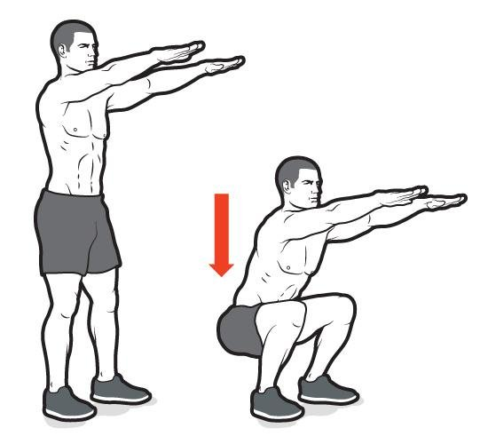
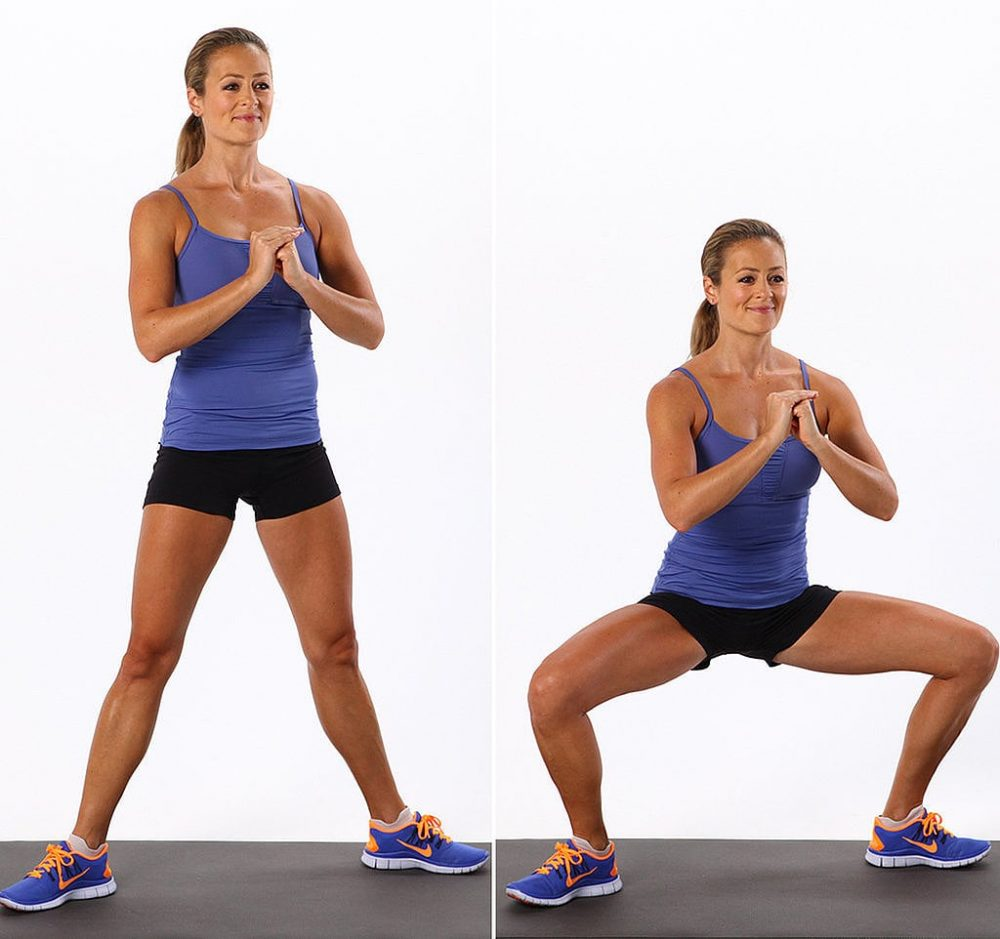

Técnica · En casa · 9 de junio de 2021
Sentadillas con autocarga (ejercicio con peso corporal)
SENTADILLA
¿Qué es la sentadilla?
La sentadilla (o cuclilla, si la flexión de rodillas y caderas es mayor) es un ejercicio fundamental de fuerza que trabaja principalmente:
- Músculos de los muslos (cuádriceps, femorales, aductores).
- Músculos de la cadera y glúteos (glúteo mayor, medio y menor).
- Estabilizadores como el core (abdominales y lumbares) y los músculos de la espalda baja.
Además, fortalece huesos, ligamentos y tendones de piernas y caderas, mejorando la estabilidad y la resistencia.
Beneficios de la sentadilla
- Desarrollo muscular: Aumenta la fuerza y el volumen de piernas y glúteos.
- Mejora funcional: Favorece movimientos cotidianos como levantarse, caminar o subir escaleras.
- Fortalecimiento óseo: Reduce el riesgo de osteoporosis al fortalecer los huesos.
- Estabilidad articular: Refuerza ligamentos y tendones, mejorando la salud de rodillas y caderas.
Controversia sobre las sentadillas
Aunque es un ejercicio muy efectivo, algunos entrenadores han señalado posibles riesgos:
- Lesiones lumbares: Si se realiza con mala técnica, como arquear la espalda o inclinar el torso demasiado hacia adelante.
- Lesiones de rodilla: Si las rodillas se desplazan excesivamente hacia adelante o no están alineadas con los pies.
Sin embargo, muchos expertos defienden que, con una técnica adecuada, las sentadillas son seguras y altamente beneficiosas.
Cómo hacer una sentadilla con buena técnica
- Posición inicial:
- Pies separados al ancho de los hombros, con las puntas ligeramente hacia afuera (10-30°).
- Mantén la espalda recta y el core (zona abdominal) activado.
- Mira hacia adelante para mantener el cuello en posición neutra.
- Descenso:
- Flexiona las rodillas y caderas simultáneamente, como si fueras a sentarte en una silla.
- Baja hasta que los muslos estén al menos paralelos al suelo (o más abajo para una cuclilla profunda, si tienes la movilidad).
- Mantén las rodillas alineadas con los dedos de los pies; evita que se desplacen hacia adentro o afuera.
- El peso debe estar en los talones o en el centro de los pies, no en las puntas.
- Ascenso:
- Empuja con los talones para volver a la posición inicial, extendiendo rodillas y caderas.
- Mantén el core activado y la espalda recta durante todo el movimiento.
- Respiración:
- Inhala al bajar y exhala al subir.
Formas modificadas de sentadilla (para principiantes o quienes buscan reducir el impacto)
Si tienes preocupaciones sobre lesiones o no estás acostumbrado al ejercicio, prueba estas variaciones:
- Sentadilla con peso corporal: Sin pesas, ideal para aprender la técnica.
- Sentadilla con apoyo: Usa una silla o una pared para mayor estabilidad.
- Sentadilla parcial: Baja solo hasta un punto cómodo, sin llegar a la profundidad total.
- Sentadilla con mancuernas o kettlebell: Añade peso ligero para progresar sin sobrecargar la columna como con una barra.
Series y repeticiones recomendadas
- Principiantes: 3 series de 10-15 repeticiones con peso corporal o peso ligero, enfocándote en la técnica.
- Intermedios: 3-4 series de 8-12 repeticiones con peso moderado.
- Avanzados: 4-5 series de 6-10 repeticiones con peso más pesado, asegurando buena forma.
- Frecuencia: 2-3 veces por semana, dejando al menos 48 horas de descanso entre sesiones para la misma musculatura.

Consejos para evitar lesiones
- Calentamiento: Realiza 5-10 minutos de movilidad articular y estiramientos dinámicos antes de empezar.
- Progresión gradual: Aumenta el peso o la profundidad de la sentadilla poco a poco.
- Supervisión: Si eres principiante, entrena con un instructor o usa un espejo para corregir la postura.
- Movilidad: Trabaja la flexibilidad de caderas, tobillos y rodillas para mejorar el rango de movimiento.
- Escucha tu cuerpo: Si sientes dolor (no confundir con fatiga muscular), detente y revisa tu técnica.
Respuesta a la controversia
- Riesgo lumbar: Se minimiza manteniendo la espalda recta, el core activado y evitando cargas excesivas sin una técnica sólida.
- Riesgo de rodilla: Las sentadillas bien ejecutadas no solo son seguras, sino que pueden fortalecer las rodillas al mejorar la estabilidad de los músculos circundantes.
Las sentadillas se han coronado como las reinas absolutas para fortalecer y tonificar las piernas y aumentar y dar forma a los glúteos, por eso hemos querido mostrarte los 6 tipos de sentadillas más efectivas en auto carga.
- Sentadilla clásica
- Sentadilla sumo
- Sentadilla búlgara
- Sentadilla profunda
- Sentadilla con salto
- Sentadilla pistol o Sentadilla a una pierna
